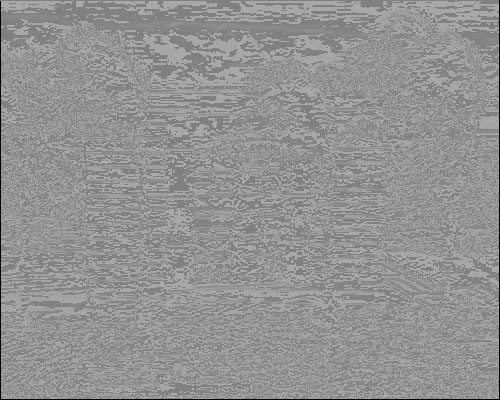
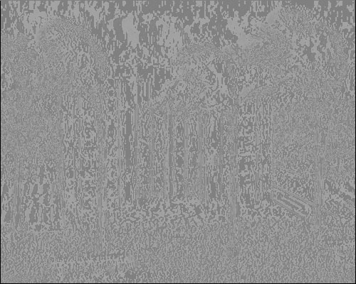
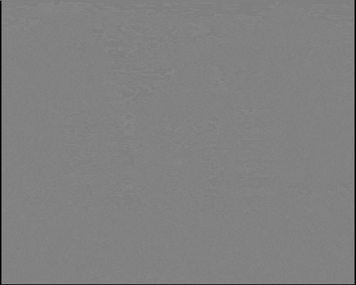
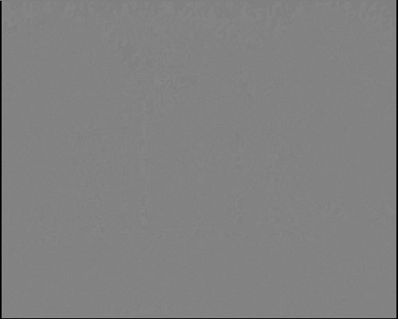

Original Image:

By Paul Joy
Write a C, C++ program to read in raw format image, and perform filtering by convolving it with
small operators of 3*3 and 5*5 coefficients.
Original Image:
Sobel 3x3 x-direction:
Sobel 3x3 y-direction:
Sobel 5x5 x-direction:
Sobel 5x5 y-direction:
Using the following code: View